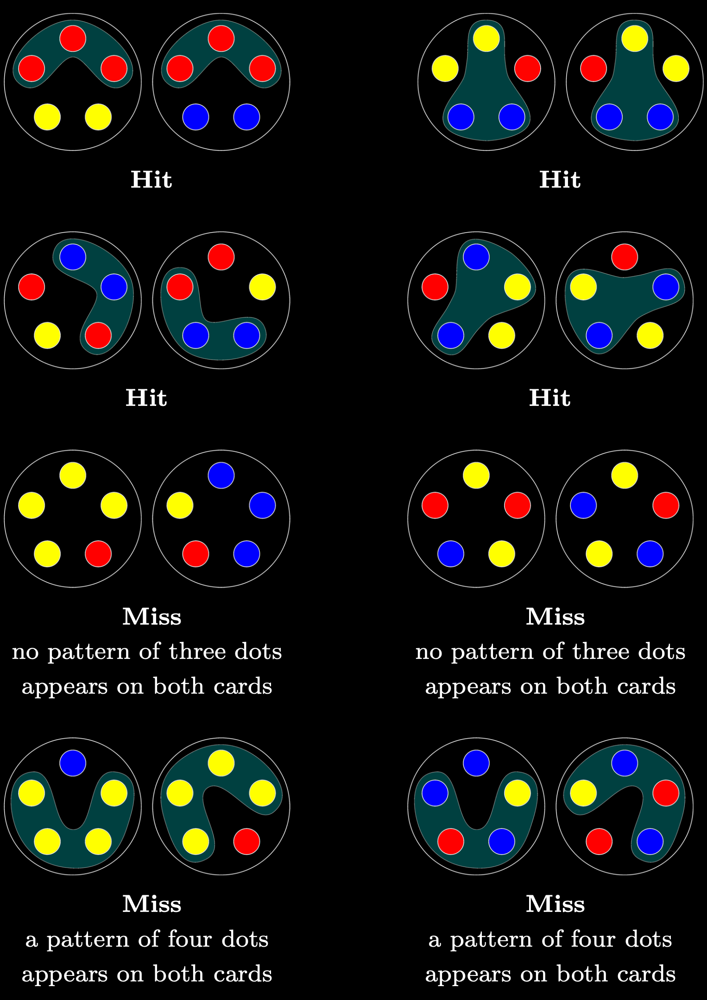

Nails is a simple pattern-matching card game in the spirit of SET, with a dynamic similar to war. This HTML version is for one player.
Each card has five dots arranged in a circle. Each dot is red, blue, or yellow.
A pair of cards is a hit if there is a pattern of three dots appearing on both cards AND no pattern of four dots appearing on both cards. Otherwise, the pair is a miss. To count, patterns must have the same clockwise/counterclockwise orientation.
Game Play
- You have 100 seconds to score as many points as possible.
- Each correct answer: +1 point.
- Each incorrect answer: −2 points.
- Five correct in a row: +15-second bonus.
- Keyboard shortcuts: H (Hit), M (Miss), N (Next).
Notes
The two cards drawn are never the same, and cards with all dots the same color are excluded. Pairs of cards are drawn at random, with each pair equally likely. The probability that a pair is a hit is approximately 50.5%.
About
The card game Nails was designed in 2010 by Michael Lesnick and developed by Michael and Thomas Lesnick. This HTML version was created in 2025 by Michael Lesnick with invaluable help from Aaron Soloway and Claude.
Contact
Feedback about the game is welcome at lesnick@gmail.com.